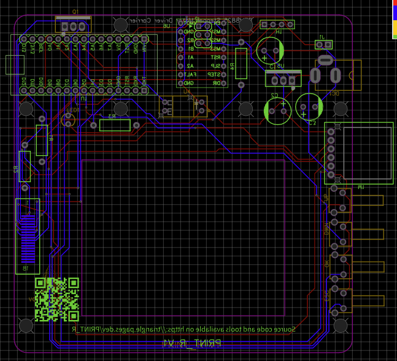
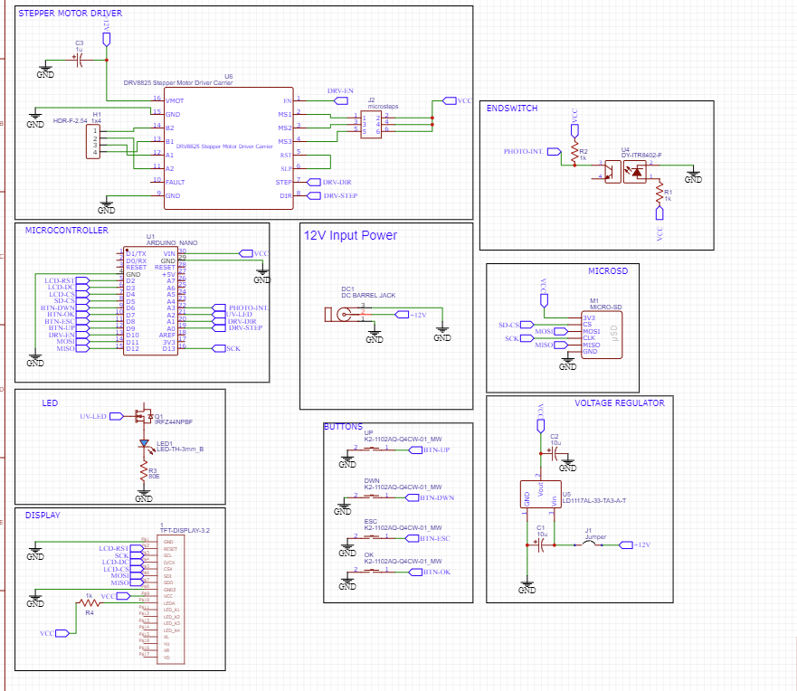

PRINT_R
An affordable SLA 3D printer project.

Introduction
Print_R is a printer based on the popular cheap crowdsourced 3D printer Lite3DP which was on sale in November 2021 via Crowd Supply. The price was a modest $100, but due to import taxes and conversion rates in India, the price was considerably higher (about 9000 rupees). The build volume of the Lite3DP is about 35mm x 45mm. In the version of Print_R, I aim to increase this build volume to 45mm x 60mm while maintaining a low price.
There are no entry-level printers that do not require a very high amount of investment. This printer tries to solve this. Most of the time people trying to look into SLA 3D printing are owners of FDM 3D printers; designers can try to adapt their designs in such a way that when they need small and precise parts, they can use this printer.
Objectives
This project aims to boost education. I was the only person in my engineering class to own a 3D printer. I found it quite surprising as I can credit all my current skills to owning one. All my motivation stemmed from a single 3D printer. Three years after getting one, I believe I have learned a lot of things thanks to it. I wouldn’t have learned all these skills if I had never owned one. The project PRINT_R is for anyone aspiring to start their 3D printing journey by creating a DIY kit that can be self-assembled by the user.
Sales Opportunities
- Target group: Engineering students and passionate makers involved in the maker culture, ages 15 to 25.
- Target purchaser: The target group profile, along with parents willing to empower their kids' creative minds.
- Customer service: As it's going to be a DIY kit for the user to assemble themselves and schematics are open source, the diagnostics are going to be DIY and community-driven.
Design

